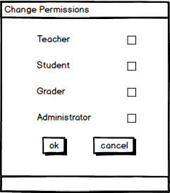
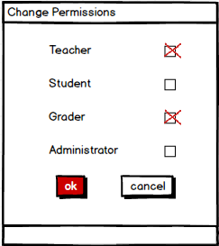

This scenario describes how an administrator changes the permissions of a user. Administrators may change a User's privilege, either changing a User's permissions, or adding different details to the User so they have access to different courses.
By changing the permissions of a user, the user has access to different areas of the test tool. For example, a student may only take tests and view grades, which a user with teacher level permissions may also create questions and create tests.
As seen in Figure 1, adminstrators change the permissions of user after clicking on the options drop down and selecting "edit," which can be seen in Section 2.6.1. A popup window, with the permissions appears and the administrator has the option of changing the user to four different permissions: student, teacher, grader, or administrator.

Figure 1: The permission options
Administrators can set multiple permissions on one user, meaning that a user can be a grader and a student for example, or a teacher and administrator, which is shown in Figure 2.

Figure 2: Administrator setting multiple permissions
By having multiple permissions, a user has access to multiple areas of the test tool (i.e. a user with both teacher and administrator permissions has access to all features of both). This feature essentially allows students to be a teacher's assistant to a class, or for teachers to also grade their own tests.
The administrator clicks on the "ok" button at the bottom of the window to finalize any changes, or clicks "cancel" to decline any changes that are made to the user.